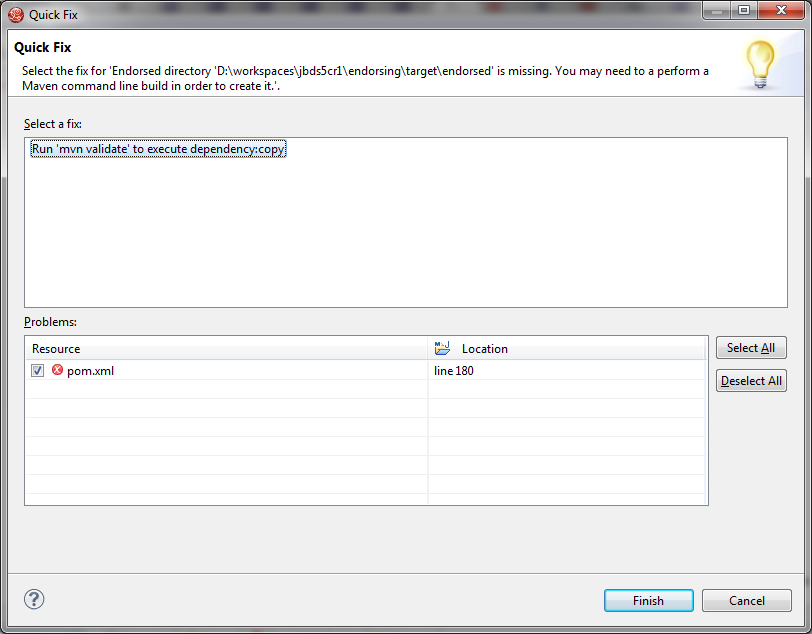
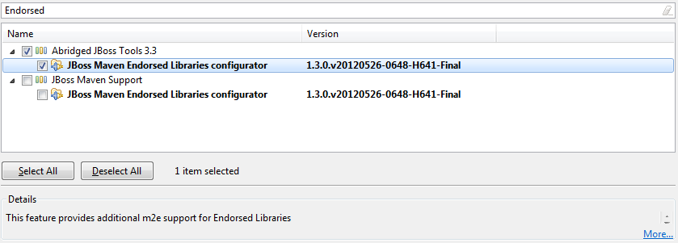

JBoss Maven Integration |
|
| Endorsed Libraries support |
In case endorsed directories are defined in the maven-compiler-plugin configuration, this new maven configurator :
If there's a maven-dependency-plugin:copy goal defined in a plugin execution, then a quick fix will be available for the error marker, basically proposing the user to run mvn <phase_executing_dependency_copy>. After that goal is run, the project configuration is updated, effectively adding the Endorsed Libraries to the project's classpath. Please note that the maven-dependency-plugin execution is still not covered by m2e (this goes beyond the scope of this JIRA), thus requires custom lifecycle mapping (see http://wiki.eclipse.org/M2E_plugin_execution_not_covered). The Endorsed Libraries configurator is available out-of-the-box in JBoss Developer Studio 5.0.0.CR1 and as a standalone feature in the JBoss Tools update site, under the Abridged or Maven categories.  See JBIDE-11738 for more details. |
|
|
|